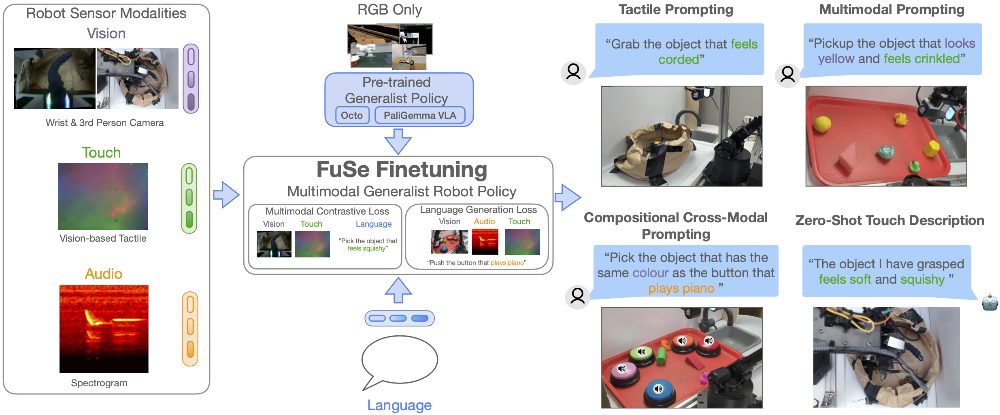
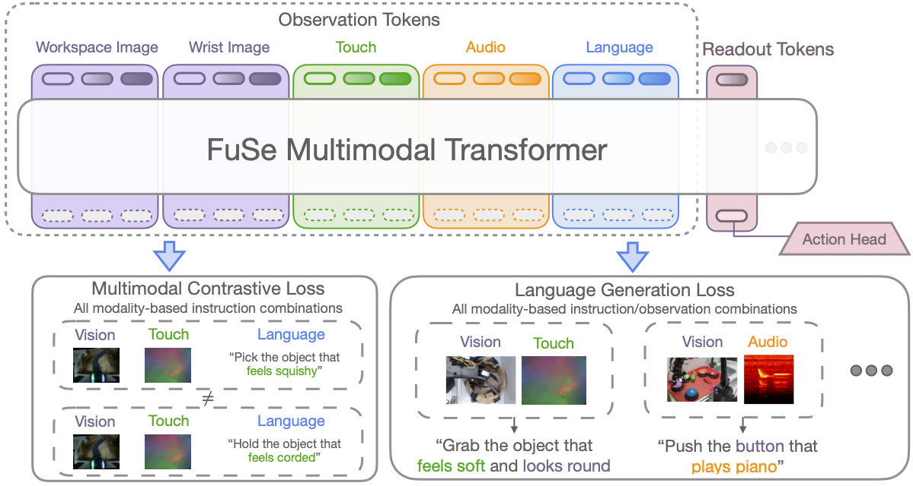
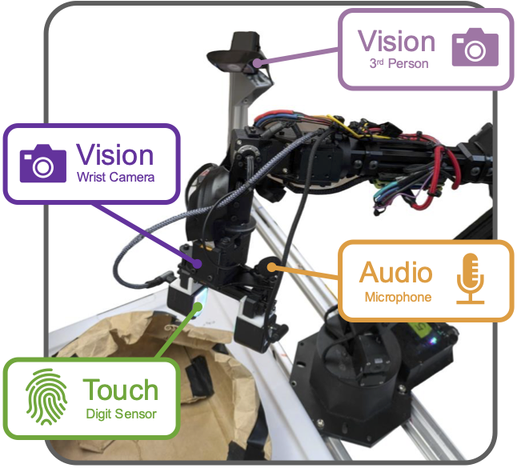
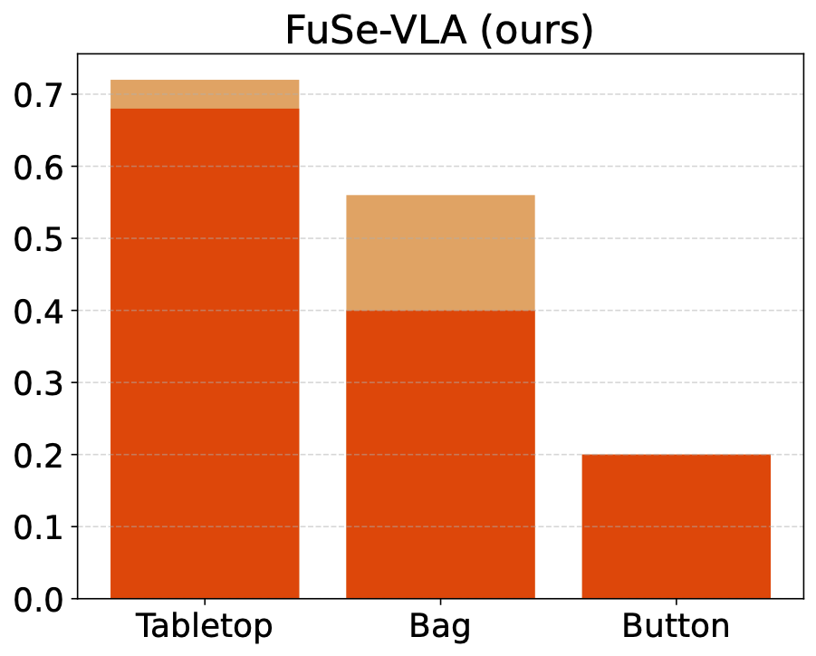

Beyond Sight
Finetuning Generalist Robot Policies with Heterogeneous Sensors via Language Grounding
FuSe improves performance across a number of tasks and settings and enables cross-modal reasoning
Abstract
Interacting with the world is a multi-sensory experience: achieving effective general-purpose interaction requires making use of all available modalities -- including vision, touch, and audio -- to fill in gaps from partial observation. For example, when vision is occluded reaching into a bag, a robot should rely on its senses of touch and sound. However, state-of-the-art generalist robot policies are typically trained on large datasets to predict robot actions solely from visual and proprioceptive observations.
In this work, we propose FuSe, a novel approach that enables finetuning visuomotor generalist policies on heterogeneous sensor modalities for which large datasets are not readily available by leveraging natural language as a common cross-modal grounding. We combine a multimodal contrastive loss with a sensory-grounded language generation loss to encode high-level semantics. In the context of robot manipulation, we show that FuSe enables performing challenging tasks that require reasoning jointly over modalities such as vision, touch, and sound in a zero-shot setting, such as multimodal prompting, compositional cross-modal prompting, and descriptions of objects it interacts with. We show that the same recipe is applicable to widely different generalist policies, including both diffusion-based generalist policies and large vision-language-action (VLA) models. Extensive experiments in the real world show that FuSe is able to increase success rates by over 20% compared to all considered baselines.
Approach

FuSe Method.
Naïvely finetuning a pre-trained generalist policy with a mean-square-error (MSE) imitation loss conditioned on additional sensor data leads to the policy over-relying on its pretraining modalities and ignoring the new modalities. FuSe overcomes this limitation by introducing two additional losses that fully leverage multimodality and connect the semantic knowledge of pre-trained generalist policies with unseen sensor modalities:
- Multimodal Contrastive Loss: A CLIP-style contrastive learning loss aims to maximize mutual information between different modalities and semantics of the same scene. Concretely, we build an observation embedding by feeding all modalities once more through the transformer and combining them via a multi-head attention layer. We then compute a CLIP loss for each possible instruction resulting from combining the different available modalities. These losses are finally averaged to form a combined multimodal contrastive loss.
- Multimodal Generative Loss: We design a generative network that functions as an add-on head to the backbone model. In practice, for each possible modality combination, we build an observation embedding as above, and feed it through the generative head. Then, we compute an auxiliary cross-entropy loss by comparing the head output with the appropriate language instruction. We use a single transformer as the generative head for all possible modality combinations, with modality tokens to distinguish between input modalities.

FuSe Architecture.
Dataset
We collect a dataset of 26,866 trajectories over three challenging tasks where the robot is teleoperated using a Meta Oculus Quest 2 VR headset. The tasks are:
- Grasping, tabletop: Multiple obejcts are placed on a tray, and the robot must grasp and lift the correct one, as prompted by a text command.
- Grasping, shopping bag: Similar to (1); however, third-person vision is heavily occluded once the arm enters the bag, and lighting is affected significantly.
- Button pressing: Multiple colored, sound-playing buttons are placed on a tray, along with distractors. The robot is prompted to press a button, causing a short audio clip to be played. We also include some compositional trajectories in this setting: the robot is instead prompted to grasp the distractor sharing the same visual characteristics as a button, e.g. "grab the object that has the same color as the button that plays piano"

Sensor setup.
The two grasping tasks (tabletop and shopping bag) feature visual, tactile, and action data, while the button pressing and compositional tasks also include sound. Visual observations are recorded at a resolution of 640x480, while tactile DIGIT images are at a resolution of 320x240. The audio observations comprise 1s of the most recent microphone samples, recorded at a frequency of 44,100Hz.
Results


We compare FuSe to several baselines. Octo Vision FT refers to a pretrained Octo model finetuned on our dataset, using only vision modalities; Octo scratch refers to training an Octo transformer of the same size from scratch on our dataset, using all modalities; ResNet Scratch refers to training a smaller ResNet-based model on all modalities from scratch.
FuSe outperforms baselines over all environments, most significantly in the partially-observable shopping bag task.
Compositional Capabilities
Simple Task
 We prompt the policy to grab an object that has the same color as the training button that plays a certain sound (e.g., "grab the object with the same color as the button that plays piano")
We prompt the policy to grab an object that has the same color as the training button that plays a certain sound (e.g., "grab the object with the same color as the button that plays piano")
Multi-step Task

We exploit the generative head to connect between different subtasks. First, we prompt the model to press a button not seen at training time, using only visual instructions (e.g., "press the blue button"); this button plays a sound heard during training. Then, we feed the resulting sound to the generative head, which will generate the instruction related to the corresponding audio (e.g., "press the button that plays piano"). Finally, we prompt the model with the audio instruction in the training environment, where the model has already associated the visual cues of the button to the corresponding sound, and will execute a trajectory that ends up pressing the button that plays the same sound as the button pressed in the first subtask.
The robot is prompted to press the (unseen) pink button, and then based on audio output generates the command "Push the green button", which it executes.
Other Architectures
Although most of our experiments are with an Octo transformer, the FuSe method is widely applicable. We apply it to a PaliGemma-based 3B-parameter VLA in our test environments, pretrained on BridgeData V2 and finetuned on our multimodal dataset.
 Our policy achieves robust performance on the grasping tasks, showcasing the suitability of FuSe to different generalist policies.BibTeX
@article{jones24-fuse,
title={Beyond Sight: Finetuning Generalist Robot Policies with Heterogeneous Sensors via Language Grounding},
author={Joshua Jones and Oier Mees and Carmelo Sferrazza and Kyle Stachowicz and Pieter Abbeel and Sergey Levine},
year={2024}
}